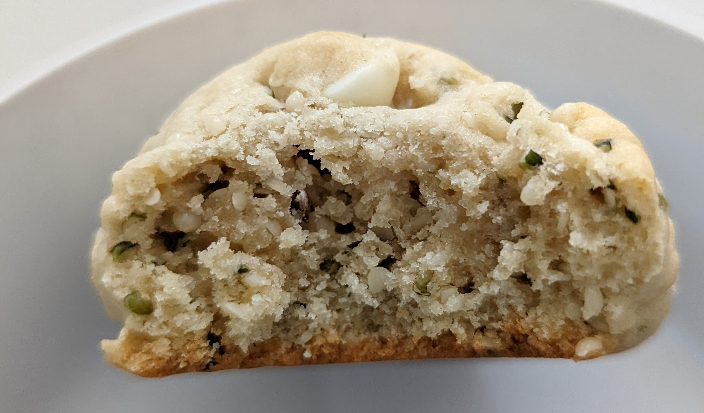

malted hemp cookies
favorite cookie recipe so far
Ingredients
- 1 cup flour
- 1/2 tsp baking soda
- 1/2 tsp salt
- 1/2 cup hemp seeds (does NOT get you high)
- 1/4 cup granulated sugar
- 1/4 cup brown sugar
- 1/4 cup malted milk powder
- 1/2 cup butter (melted)
- 1 egg
- 1 tsp vanilla extract
- 1/2 cup chocolate chips
Ingredients
- mix flour, baking soda, salt, [mix 1]
- mix sugars, malted milk powder, butter, egg, vanilla [mix 2]
- add mix 2, hemp seeds into mix 1[main mix]
- add chocolate chips
- cool in fridge for 1 - 24 hrs
- scoop 1 TBsp per cookie on to baking sheet with parchment paper
- bake @ 350 for 9/10 mins
- cool on baking sheet for 10 mins
- cool on rack for 10 mins

curated by BUSHSK8R